Data visuals in R 2018
Here are the notes from my talk on dataviz at the 2018 UQ Winterschool in Bioinformatics.
These notes run through some of the principles I present and also show R code for generating data visuals.
If you want to take the dataviz quiz first, then click here. We will look at the results later using R.
{% include r-courses-ad.html %}
Graphics packages in R
The dominant options are the base graphics R comes shipped with and the ggplot2 package.

Plot your data
Make your own Datasaurus dozen
The datasaurus is a great example of why you should view your data, invented by Alberto Cairo. See Steph Locke’s code and package on github for making this in R.
library(datasauRus)
datnames <- rev(unique(datasaurus_dozen$dataset))
nlevels <- length(datnames)
for (i in 1:nlevels){
i <- which(datasaurus_dozen$dataset == datnames[i])
plot(datasaurus_dozen$x[i], datasaurus_dozen$y[i],
xlab = "x", ylab = "y", las = 1)
Sys.sleep(1)
}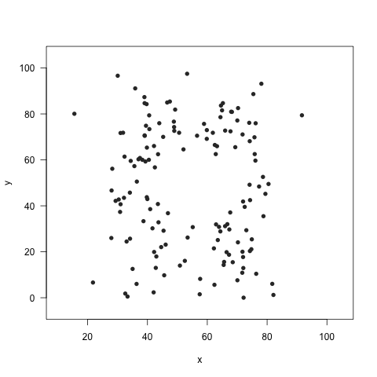
Convince yourself that the mean, sd and correlation is the same in all of these plots:
library(dplyr)
datasaurus_dozen %>% group_by(dataset) %>%
summarize(meanx = mean(x), meany = mean(y),
sdx = sd(x), sdy = sd(y),
corr = cor(x,y))We can also save these as .png images to make a .gif image (see also here)
for (ilvs in 1:nlevels){
i <- which(datasaurus_dozen$dataset == datnames[ilvs])
thiscol <- ifelse(datnames[ilvs] == "dino", "darkseagreen", "grey20")
png(filename = paste0("datasaurus/",datnames[ilvs],".png"))
plot(datasaurus_dozen$x[i], datasaurus_dozen$y[i],
xlab = "x", ylab = "y", las = 1,
xlim = c(10, 105), ylim = c(-5, 105), col = thiscol, pch = 16)
dev.off()
}Clarity not simplicity
I give the example of the famous ‘hockey stick’ graph of Northern Hemisphere temperatures.
Dataviz are models
Any visualization is a model
Alberto Cairo 2016
Different viz models for the same data
Three ways of visualising the same x-y data
Each of these graphs of the same data has a slightly different interpretation.
x <- 1:100
y <- x + rnorm(100, sd=30)
plot(x,y, pch = 16, col = grey(0.5, 0.5))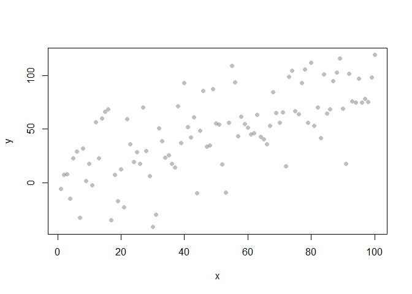
mod1 <- lm(y ~ x)
plot(x,y, col = 'white')
abline(mod1, lwd = 3, col = 'red')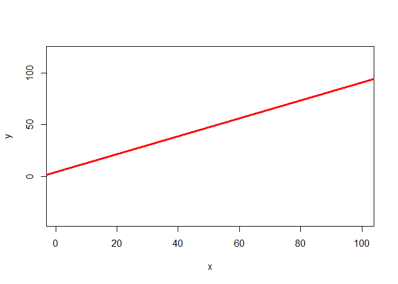
library(MASS)
filled.contour(kde2d(x,y), scale = F)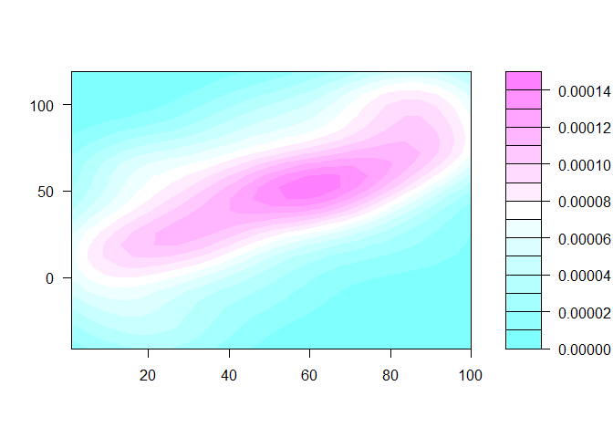
plot(x,y, pch = 16, col = grey(0.5, 0.5))
abline(mod1, lwd = 3, col = 'red')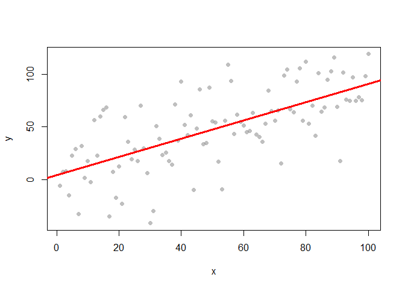
Models help clarify complex data-sets
Effect size often has to been seen to be understood
When doing confirmatory analysis, we might want to know how strong an effect is. Data viz is very useful for this task. Lets compare two datasets that have similar p-values, but very different effect sizes
set.seed(42)
x <- rnorm(1000)
set.seed(420)
y <- 5*x + 3 + rnorm(1000, sd = 15)
set.seed(420)
y2 <- 5*x + 3 + rnorm(1000, sd = 1)
mod1 <- lm(y ~ x)
mod2 <- lm(y2 ~ x)
#Compare the pvalues on the slopes
summary(mod1)
##
## Call:
## lm(formula = y ~ x)
##
## Residuals:
## Min 1Q Median 3Q Max
## -43.201 -10.330 0.395 9.634 46.694
##
## Coefficients:
## Estimate Std. Error t value Pr(>|t|)
## (Intercept) 2.8054 0.4614 6.080 1.71e-09 ***
## x 4.2096 0.4603 9.145 < 2e-16 ***
## ---
## Signif. codes: 0 '***' 0.001 '**' 0.01 '*' 0.05 '.' 0.1 ' ' 1
##
## Residual standard error: 14.59 on 998 degrees of freedom
## Multiple R-squared: 0.07732, Adjusted R-squared: 0.07639
## F-statistic: 83.63 on 1 and 998 DF, p-value: < 2.2e-16
summary(mod2)
##
## Call:
## lm(formula = y2 ~ x)
##
## Residuals:
## Min 1Q Median 3Q Max
## -2.88004 -0.68868 0.02634 0.64229 3.11291
##
## Coefficients:
## Estimate Std. Error t value Pr(>|t|)
## (Intercept) 2.98703 0.03076 97.11 <2e-16 ***
## x 4.94731 0.03069 161.21 <2e-16 ***
## ---
## Signif. codes: 0 '***' 0.001 '**' 0.01 '*' 0.05 '.' 0.1 ' ' 1
##
## Residual standard error: 0.9724 on 998 degrees of freedom
## Multiple R-squared: 0.963, Adjusted R-squared: 0.963
## F-statistic: 2.599e+04 on 1 and 998 DF, p-value: < 2.2e-16
par(mfrow = c(1,2))
plot(x,y, pch = 16, col = grey(0.5,0.5), las = 1)
abline(mod1, lwd = 2, col = 'red')
plot(x,y2, pch = 16, col = grey(0.5,0.5), las = 1)
abline(mod2, lwd = 2, col = 'red')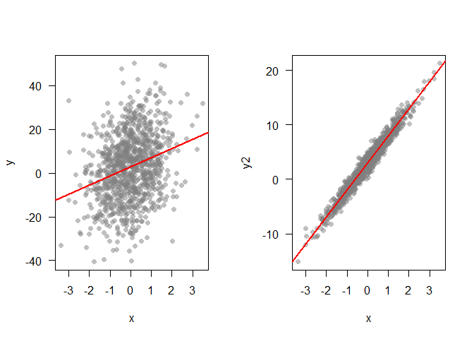
Superplots
Andrew Gelman coined the term superplots for plotting different models on multiple panels of a graph so you can visually compare them.
For instance, say we have several time-series and we want to know if they deviate from each other signficantly. An easy way to compare them is to fit splines to each time-series and then just plot them next to each other, with SEs. Then we can compare visually for ‘signficant’ differences.
Here’s some code to simulate three made-up series. The first two have the same trend, but different observation errors, the third has a different trend:
tmax <- 50
drift <- c(10, -5)
sd <- 40
sdobs <- 200
set.seed(5)
yzero <- cumsum(rnorm(n=tmax, mean=drift[1], sd=sd))
y1 <- yzero + rnorm(n = tmax, mean = 0, sd = sdobs)
y2 <- yzero + rnorm(n = tmax, mean = 0, sd = sdobs)
y3 <- cumsum(rnorm(n=tmax, mean=drift[2], sd=sd)) +
rnorm(n = tmax, mean = 0, sd = sdobs)
dat <- data.frame(ts = rep(letters[1:3], each = tmax), x = rep(1:tmax, 3), y = c(y1, y2, y3))We can easily plot these three series using ggplot2 and automatically add a spline.
library(ggplot2)
ggplot(dat, aes(x = x, y = y)) +
geom_point() +
facet_grid(.~ts) +
stat_smooth(method = "loess", se = TRUE) +
theme(axis.text = element_text(size=14),
axis.title = element_text(size=16,face="bold"),
strip.text.x = element_text(size = 16),
panel.background = element_rect(fill = 'white', colour = 'white'))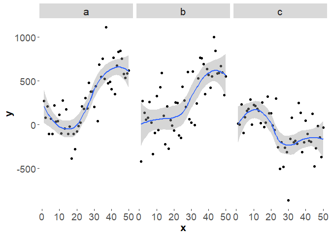
Length is most accurate
Ways of comparing data in order from most accurate (top) to more generic (bottom).
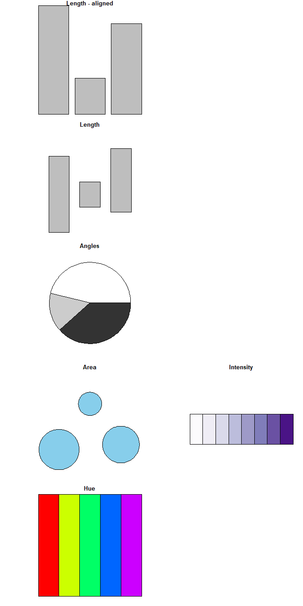
Comparing volume and area
Compare these. Note that if we compare circles we should use area, not the radius or diameter to scale their size.
n <- c(10, 5)
barplot(n, col = 'skyblue', xaxt = 'n', yaxt = 'n')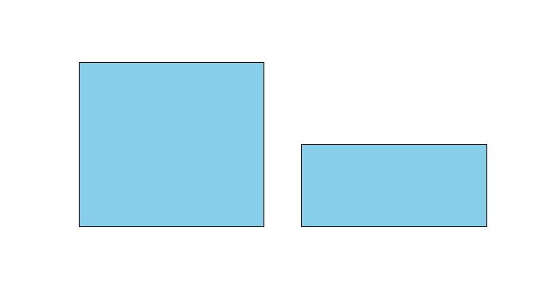
rad1 <- 1
area1 <- pi*(rad1^2)
area2 <- area1/2
rad2 <- sqrt(area2/pi)
par(mfrow = c(1,2), mar = c(0,0,0,0))
pie(1, col = 'skyblue', labels = NA, border = NA, radius = rad1)
pie(1, col = 'skyblue', labels = NA, border = NA, radius = rad2)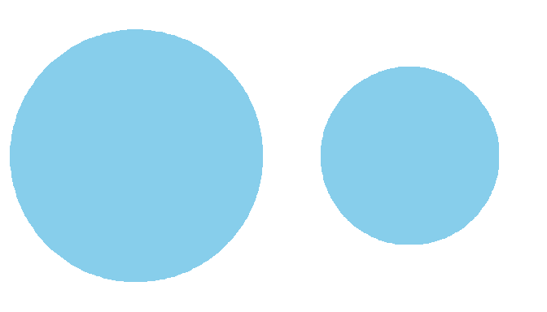
Exploration of data
Let’s create a point cloud to demonstrate some data exploration techniques
set.seed(42)
x <- rnorm(1000)
y <- 5*x + 3 + rnorm(1000, sd = 15)
plot(x,y, pch = 16, col = grey(0.5,0.5), las = 1)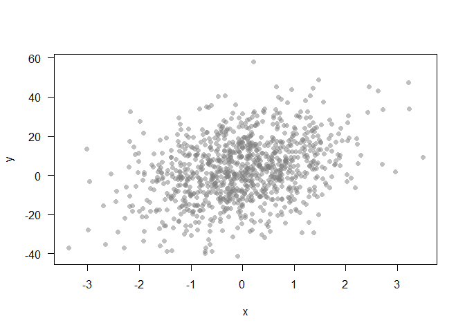
Can’t see alot here. A linear model might help us explore if there is any trend going on:
mod1 <- lm(y ~ x)
plot(x,y, pch = 16, col = grey(0.5,0.5), las = 1)
abline(mod1, lwd = 2, col = 'red')
xnew <- seq(min(x), max(x), length.out = 100)
pmod <- predict(mod1, newdata =data.frame(x=xnew), se = T)
lines(xnew, pmod$fit + pmod$se.fit, lwd = 2, col = 'red', lty = 2)
lines(xnew, pmod$fit - pmod$se.fit, lwd = 2, col = 'red', lty = 2)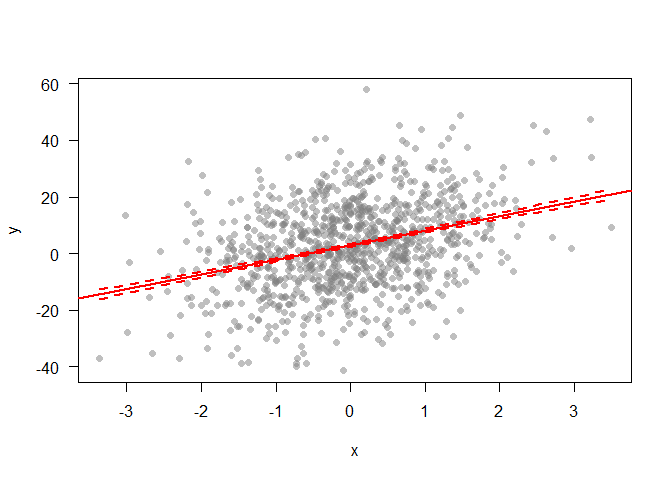
What about identifying extreme points, that may be worth investigating further? We can pick out points that are greater than 2SDs from the trend:
modresid <- resid(mod1)
sd2 <- sd(modresid)*2
ipt <- which(abs(modresid) > sd2)
plot(x,y, pch = 16, col = grey(0.5,0.5), las = 1)
abline(mod1, lwd = 2, col = 'red')
points(x[ipt], y[ipt], pch = 16, col = rgb(1,0,0, 0.6))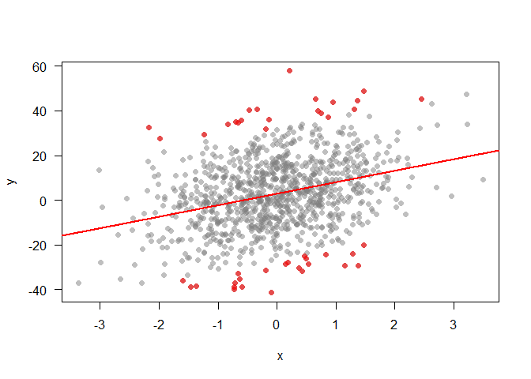
The problem with bar charts
Here is an interesting blog on the problem with barcharts.
First, let’s generate some data to play with, it has three variables x, y and z.
n <- 40
x <- rnorm(n, mean = 20, sd = 8)
y <- rnorm(n, mean = 20, sd = 3)
z <- rnorm(n, mean = 10, sd = 8)
dat <- data.frame(grp = c(rep("x", n), rep("y", n), rep("z", n)),
val = c(x,y,z))Now compare these three charts, the first is just the means:
sdat <- dat %>% group_by(grp) %>%
summarize(val = mean(val))
plot(1:3, sdat$val, type = 'p', xaxt = "n", xlab = '', ylab = '',
las = 1, cex.axis = 1.5, pch = 16, cex = 2)
axis(1, at = 1:3, labels = sdat$grp, cex.axis = 1.5)The second has standard errors and so captures some of the variation in our data :
ggplot(dat, aes(x = grp, y = val)) +
stat_summary(fun.data = "mean_se", size = 1.3) +
xlab("Group") +
ylab("Values") +
theme_bw() +
theme(axis.text=element_text(size=16),
axis.title=element_text(size=18))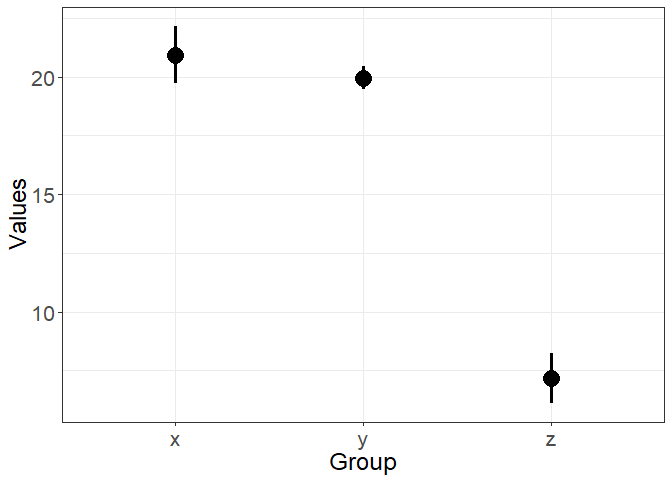
The third has boxplots, so is perhaps the most truthful, because it shows quantiles and the full range of the data (which is much broader than just the SEs).
ggplot(dat, aes(x = grp, y = val)) +
geom_boxplot(color = "black") +
xlab("Group") +
ylab("Values") +
theme_bw() +
theme(axis.text=element_text(size=16),
axis.title=element_text(size=18))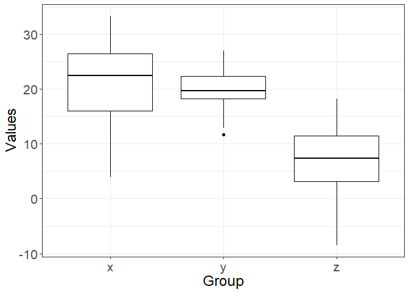
Don’t waste digital ink
Plots with less ‘add-ons’ tend to communicate the key message more clearly. For instance, just like excel plots dont:
x <- rnorm(100)
dat <- data.frame(x = x, y = 0.25*x + rnorm(100, sd = 0.2))
library(ggplot2)
library(ggthemes)
ggplot(dat, aes(x = x, y = y)) + geom_point() +
theme_excel() + theme(axis.text=element_text(size=20),
axis.title=element_text(size=20))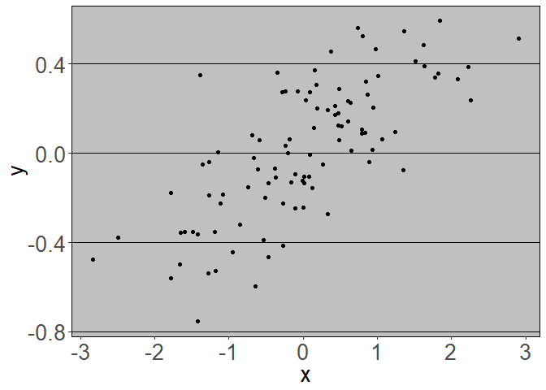
You can get additional themes for ggplot2 using this excellent package.
A cleaner view:
ggplot(dat, aes(x = x, y = y)) + geom_point() +
theme_base() + theme(axis.text=element_text(size=20),
axis.title=element_text(size=20))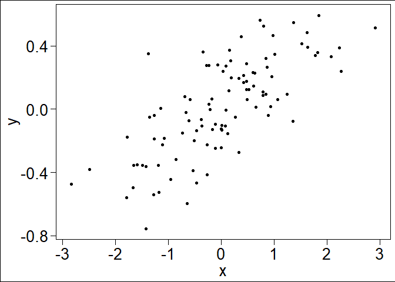
Or simply:
plot(dat$x, dat$y, xlab = "x", ylab = "y", las = 1)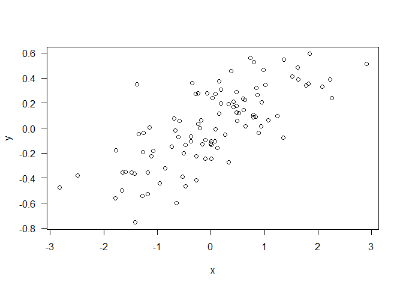
A good principle is to not use ‘ink’ on figures that isn’t needed to communicate your message. Tufte takes the ‘less ink’ philosophy to the extreme:
ggplot(dat, aes(x = x, y = y)) + geom_point() +
theme_tufte() + theme(axis.text=element_text(size=20),
axis.title=element_text(size=20))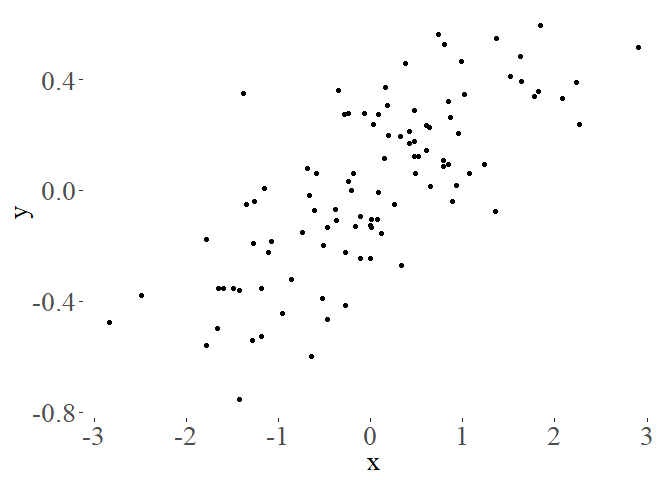
When is ggplot2 appropriate, or when should I use base R?
In general I think ggplot2 is appropriate for problems of intermediate complexity. Like this:
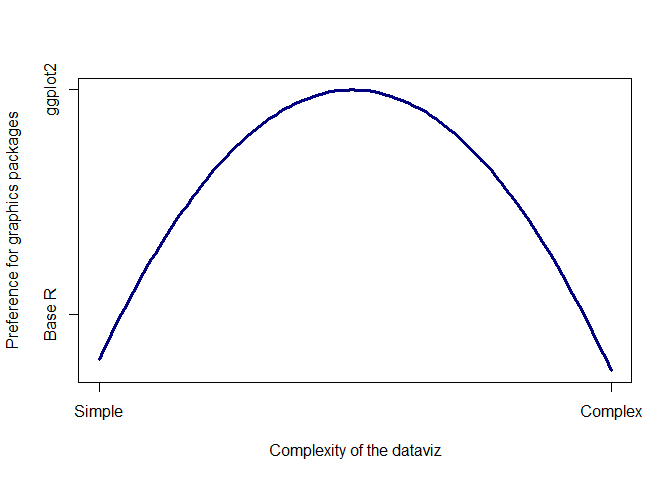 Base R is great if you just want to plot a barplot quickly, or do an x-y plot. ggplot2 comes into its own for slight more complex plots, like having multiple panels for different groups or colouring lines by a 3rd factor. But once you move to really complex plots, like overlaying a subplot on a map, ggplot2 becomes very difficult, if not impossible. At that point it is better to move back to Base R. ggplot2 can also get very fiddly if you are very specific about your plots, like having certain colours, or the labels in a certain way.
As an example, ggplot2 is great for data like this:
x1 <- rnorm(30)
grps <- letters[c(rep(1, 10), rep(2, 10), rep(3, 10))]
y1 <- x1 + c(rep(1, 10), rep(-1, 10), rep(2, 10)) + rnorm(30)
dat <- data.frame(x = x1, grps = grps, y = y1)
head(dat)
## x grps y
## 1 0.3293278 a 1.5458494
## 2 -0.2975122 a 0.5877379
## 3 1.1849880 a 2.2053261
## 4 1.3095354 a 3.2023256
## 5 -1.1704553 a 1.2776289
## 6 0.9961189 a 1.7440880
ggplot(dat, aes(x = x1, y = y1, color = grps)) +
geom_point() + theme_bw()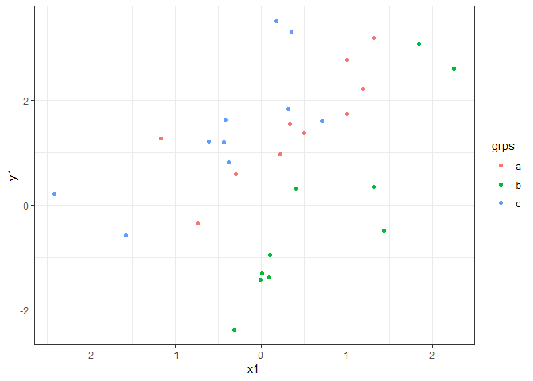
It is also pretty handy for faceting:
ggplot(dat, aes(x = x1, y = y1)) +
geom_point() + facet_grid(.~grps)+
theme_bw()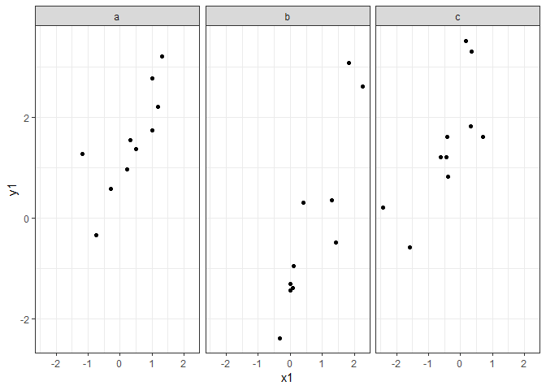
The key with ggplot2 is to have your data in a data-frame.
In reality both ggplot2 and base R graphics are worth learning, but I would start with learning the basics of base R graphics and then move onto ggplot2 if you want to quickly plot lots of structured data-sets.
Pie graphs vs bar graphs
In Mariani et al. they plot rates of seafood fraud by several European countries. While its a foundational study that establishes improvement in the accuracy of food labelling, their graphics could be improved in several ways.
First they use perspective pies. This makes it incredibly hard to compare the two groups (fish that are labelled/mislabelled). Humans are very bad at comparing angles and pretty bad at comparing areas. With the perspective you can’t even compare the areas properly. They do provide the raw numbers, but then, why bother with the pies?
Note that the % pies misrepresent the data slightly because the % figures are actually odds ratios (mis-labels / correct labels), rather than percent (mis-labeels / total samples).
Second the pies are coloured red/green, which will be hard for red-green colourblind people to see.
Third, they have coloured land blue on their map, so it appears to be ocean at first look.
Fourth, the map is not really neccessary. There are no spatial patterns going on that the authors want to draw attention to. I guess having a map does emphasize that the study is in Europe. Finally, the size of each pie is scaled to the sample size, but the scale bar for the sample size shows a sample of only 30, whereas most of their data are for much larger samples sizes (>200). Do you get the impression from the pies that the UK has 668 samples, whereas Ireland only has 187? Therefore, from this graphic we have no idea what sample size was used in each country.
In fact, all the numbers that are difficult to interpret in the figure are very nicely presented in Table 1.
Below is a start at improving the presentation. For instance, you could do a simple bar chart, ordering by rate of mislabelling.
cnames <- c('Ireland' ,'UK','Germany','France','Spain','Portugal')
corrlab <- c(180, 647, 145, 146, 267, 178)
mislab <- c(7, 21, 9, 4, 24, 12)
misrate <- 100*signif(mislab / (corrlab + mislab),2)
corrrate <- 100 - misrate
ord <- order(misrate, decreasing = T)
y <- rbind(corrrate, misrate)
par(mar = c(5,4,4,7))
barplot(y[,ord], names.arg = cnames[ord], col = c('skyblue','tomato'), ylab = 'Labelling rate (%)', las = 2)
legend(x=7.5, y = 90, legend = c("Mislabelled", "Correctly labelled"), pch = 16, col = c('tomato','skyblue'), xpd = NA, cex = 0.7)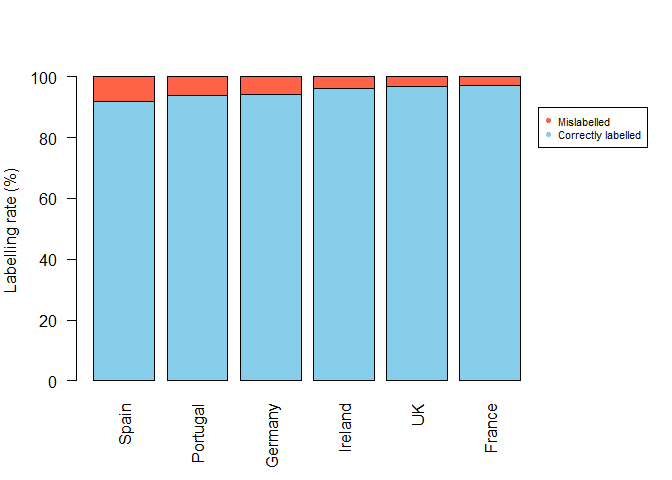
You could add another subfigure to this, showing the rate by different species too.
The barplot doesn’t communicate the sample size, but then that is probably not the main point. The sample sizes are probably best reported in the table
If we felt the map was essential, then putting barcharts on it would be more informative. It is not that easy to add barcharts ontop of an existing map in R, so I would recommend creating the barcharts seperately, then adding them on in Illustrator or Powerpoint.
We can make a basic map like this:
library(maps)
library(maptools)
map('world', xlim = c(-20, 20), ylim = c(35, 60), col = 'grey', fill = T)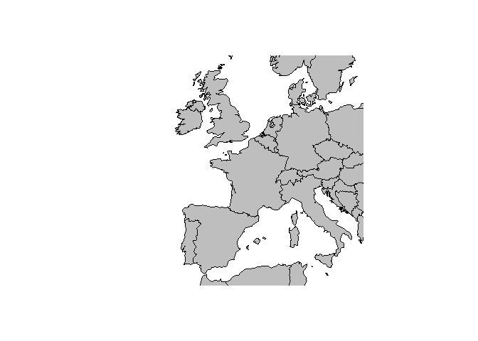
Then create some nice barcharts. We write a loop so we get one barchart for each country.
nc <- length(cnames)
par(mfrow = c(2,3), oma = c(1,1,1,3))
for (i in 1:nc){
y <- c(mislab[i], corrlab[i])
barplot(y, names.arg = '', las = 2, col = c('tomato','skyblue'), ylim = c(0, corrlab[i]), main = cnames[i], cex.main = 2.4, yaxt = 'n')
byy <- signif(max(y),2)/3
yat <- c(0, min(y), max(y))
axis(2, at = yat, las = 2, cex.axis = 2, labels = F)
axis(2, at = yat[2:3], las = 2, cex.axis = 2, labels = T)
}
legend(x = 2.8, y = 500, legend = c('Fraud', 'Correct'), pch = 15, col = c('tomato','skyblue'), xpd = NA, cex = 2, bty = 'n')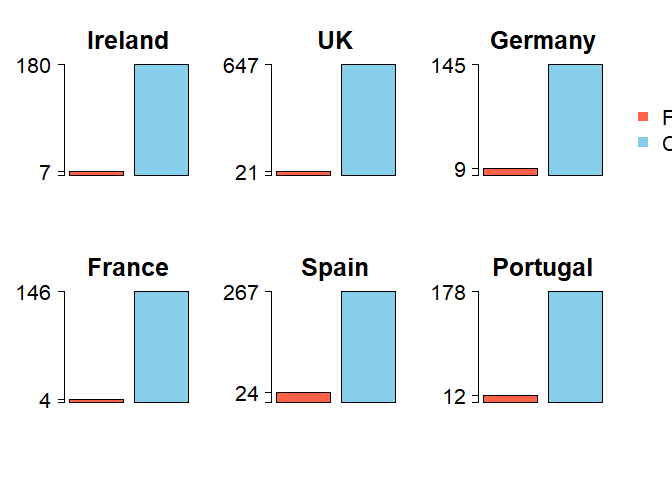
Scaling matters
It can be misleading to present % and proportion data on axes that are not scaled 0 - 100%. For instance, compare these three graphs:
y <- c(70, 72, 68, 73)
x <- 1:4
xnams <- LETTERS[1:4]
par(mfrow = c(1,3), oma = c(1,1,1,3), mar = c(5,6,2,2))
plot(x,y, pch = 3, cex = 2, las = 1, xaxt = 'n', xlab = '', ylab = 'Percent', cex.axis = 2, cex.lab = 2, tcl = 0.5, xlim = c(0, 5), col = 'red', lwd = 3)
axis(1, at = x, labels = xnams, cex.axis = 2, tcl = 0.5)
barplot(y, names.arg = xnams, las = 1, cex.axis = 2, cex.lab = 2, cex.names = 2, ylab = 'Percent')
barplot(y, names.arg = xnams, las = 1, cex.axis = 2, cex.lab = 2, cex.names = 2, ylab = 'Percent', ylim = c(0, 100))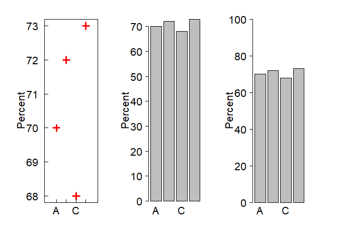
Interpreting rates
The units you use affect how people interpret your graph.
People are bad at interpreting rates, we just can’t get our heads around accumulation very well. Here is a numerical example. Check out the below figure and ask yourself:
At what time is the number of people in the shopping centre declining?
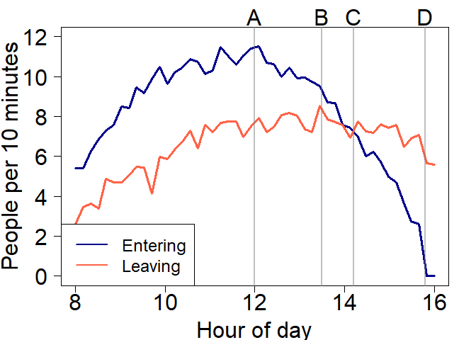
Would you say it is at point A, B, C or D?
Let’s plot the total number of people:
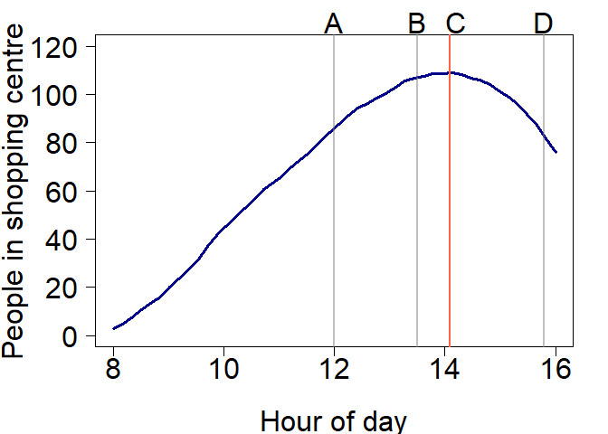
Hopefully the answer is obvious now. So the right scales can help make interpretation much easier.
You could also rephrase the question from when is the total number decreasing to when is the number entering less than the number of people leaving?
Choosing colour scales
Alot of thought should go into choosing colour scales for graphs for instance- will it print ok? will colour blind people be able to see this? does the scale create artificial visual breaks in the data? Luckily there is a package to help you make the right decision for a colour scale, it is called RColorBrewer. Check out colorbrewer.org for a helpful interactive web interface for choosing colours.
First let’s load some sea surface temperature data as a raster:
library(raster)
r <- raster("MeanAVHRRSST")
library(RColorBrewer)
par(mfrow = c(1,2))
plot(r, col = rev(brewer.pal(11, "Spectral")), asp = NA)
plot(r, col = brewer.pal(11, "Purples"), asp = NA)
## Warning in brewer.pal(11, "Purples"): n too large, allowed maximum for palette Purples is 9
## Returning the palette you asked for with that many colors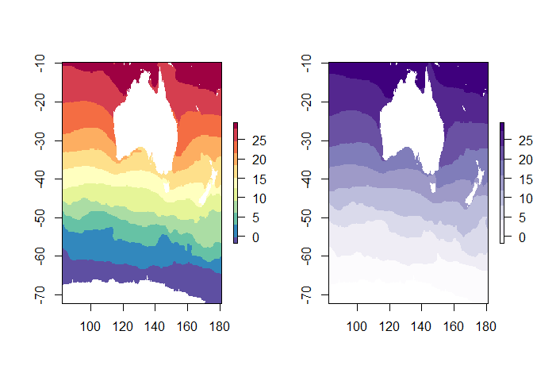
Using red-green palettes makes it hard for colour blind people. Also, using a diverging palette makes it look like there is something important about the middle point (yellow). A better palette to use would be one of the sequential ones, “Purples” shown here.
To make it easier to understand, let’s look at these again as contour plots. I will use a more appropriate diverging palette to the red-green one though.
z <- matrix(rep(1:10, 10), nrow = 10)
filled.contour(z, col = brewer.pal(9, 'Reds'), nlevels = 10)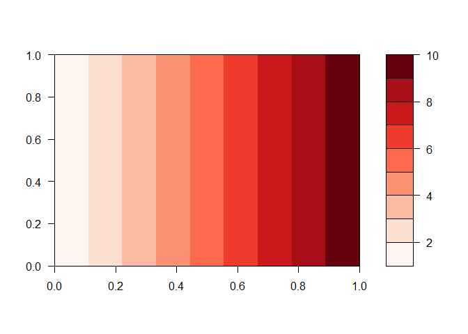
filled.contour(z, col = brewer.pal(9, 'RdBu'), nlevels = 10)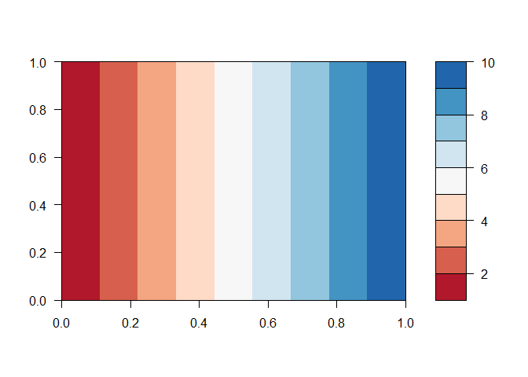
Notice the diverging pallette creates an artificial split at yellow
One of the only legitimate uses for pie graphs (I think) is visualising the colour scales. Here is how:
reds <- brewer.pal(9, 'Reds')
greens <- brewer.pal(9, 'Greens')
blues <- brewer.pal(9, 'Blues')
rdylgn <- brewer.pal(9, 'RdYlGn')
rdbu <- brewer.pal(9, 'RdBu')
dark2 <- brewer.pal(8, 'Dark2')
par(mfrow = c(2,3), mar = c(0,0,0,0), oma = c(0,0,0,0))
pie(rep(1, 9), col = reds)
pie(rep(1, 9), col = greens)
pie(rep(1, 9), col = blues)
pie(rep(1, 9), col = rdylgn)
pie(rep(1, 9), col = rdbu)
pie(rep(1, 9), col = dark2)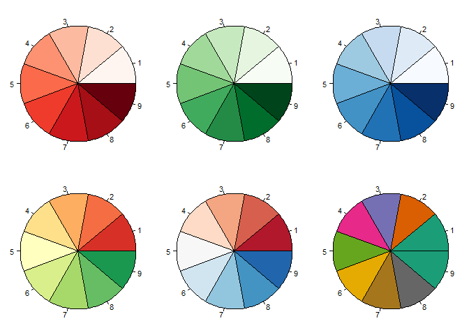
R the intergrator
In my talk I give some examples of how R can integrate everything from data input, data processing, analysis, visualisation to sharing results (even as interactive web content). The results for the quiz you took above are available as a google spreadsheet. We can use R to read that data and visualise it, and even share the results as a webpage or on Twitter.
Here are the quiz results
You can access a google sheet with the googlesheets package:
library(googlesheets)
dataviz <- gs_url("https://docs.google.com/spreadsheets/d/10i3v3NIVpgmURyLVzsiadPAMGeqa7dLFcDb9sqFe8KA/edit#gid=1513779153)")
gsheet <- gs_read(dataviz)Now the column names are just the questions in the quiz, so let’s rename them for convenience.
newnames <- c("timestamp", "shopping",
"bar_percent",
"pie_percent",
"room",
"cb_age")
names(gsheet) <- newnamesNow we are ready to do our plots. For instance, to see what people said about my age:
ggplot(gsheet, aes(cb_age)) +
geom_histogram()How did people answer the shopping quiz question?
ggplot(gsheet, aes(shopping)) +
geom_bar()What about looking at the accuracy of the pie chart vs bar chart question. To do that we first need to calculate an accuracy metric. We will use the dplyr package to do that:
library(dplyr)
library(tidyr)
outcomes <- c(72, 17)
gsheet2 <- gsheet %>%
mutate(bar_accuracy = abs(bar_percent - outcomes[1]),
pie_accuracy = abs(pie_percent - outcomes[2])) %>%
select(bar_accuracy, pie_accuracy, cb_age) %>%
gather(dataviz, accuracy, -cb_age)Here accuracy is just the quiz answers minus the correct answer (in outcomes) and then we take its absolute value.
We can plot this like so:
ggplot(gsheet2, aes(dataviz, accuracy)) +
geom_boxplot()We could also look to see how accuracy compares to guesses of my age (obviously younger guesses at my age will be more accurate ;)), and plot a model of age vs accuracy:
ggplot(gsheet2, aes(cb_age, accuracy)) +
geom_point() +
facet_grid(.~dataviz) +
stat_smooth()